Diagram Title
DownloadPlease upload the diagram to see it here.
Transforming Sri Lankan STEM Education: From static textbook pages to an immersive, interactive 3D universe.
The Shilpa AR Astronomy Module is an interactive educational application built using Unity and Vuforia. It uses marker-based image recognition to turn standard Grade 8 astronomy textbook images into real-time 3D models of the Solar System, the Sun, and planets.
Designed specifically to overcome the limitations of static teaching methods, this application enables students to use touch gestures—rotation, scaling, and zooming—to improve spatial understanding. Critically, it is optimized for low-end Android devices (2–3 GB RAM) and functions completely offline, making it highly accessible for resource-constrained schools in Sri Lanka.
Evaluating the Impact of Immersive Technologies on Sri Lankan STEM Syllabus
Bridging the gap between traditional learning and modern visualization in Sri Lankan classrooms.
Traditional Sri Lankan textbooks rely on static, 2D diagrams to teach inherently 3D and dynamic astronomy concepts. This completely fails to communicate the true nature of the Solar System, leading to massive difficulties in visualization.
Astronomy requires spatial understanding. Without proper interactive representation, students experience cognitive overload and drastically reduced engagement. Failing to grasp these foundational concepts severely hinders their progression in STEM education.
This module is designed exclusively for Grade 8 students and STEM educators in Sri Lanka. It specifically targets those operating within resource-constrained school environments where modern educational tools are scarce.
Existing digital solutions often require high-end devices and active internet connections, making them inaccessible to the average Sri Lankan classroom. Shilpa AR bridges this gap by being completely offline-capable and optimized for devices with just 2-3GB of RAM.
Experience education in a new dimension.
Shilpa AR is an interactive mobile app that works like a "digital magnifying glass" for your textbooks. When you look at an astronomy page through your phone, a flat picture of a planet instantly turns into a 3D model that floats in the air, allowing you to walk around and explore it as if it were real.
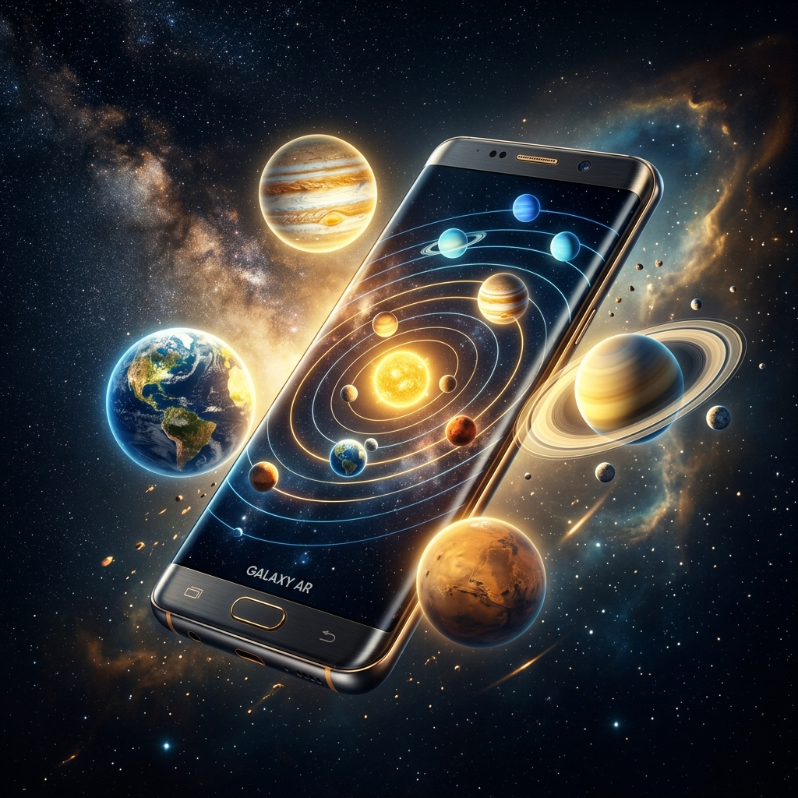
We've optimized high-end AR technology to run on low-cost mobile phones (2-3GB RAM) found in most Sri Lankan schools. This brings futuristic tech to every student, regardless of their hardware.
By moving from flat diagrams to interactive 3D space, we remove the "imagination barrier". Students no longer have to struggle to visualize complex orbits; they experience them. This makes astronomy faster to learn and much harder to forget.
Experience the Shilpa AR application through its intuitive interface and immersive educational modules.
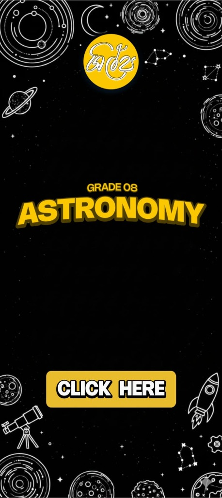
The gateway to interactive astronomy, featuring the Shilpa brand and quick-access entry.
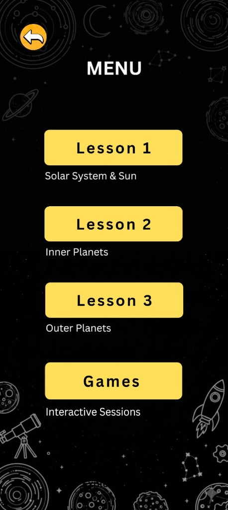
Seamlessly switch between lessons on inner planets, outer planets, and interactive games.
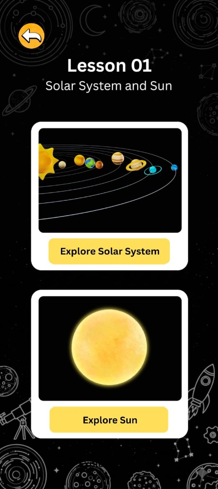
Curated educational content designed specifically for the Grade 8 Sri Lankan STEM syllabus.
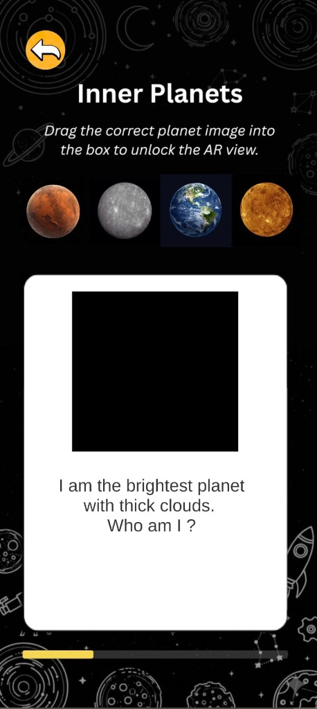
Interactive drag-and-drop mechanics to identify planets based on their unique characteristics.
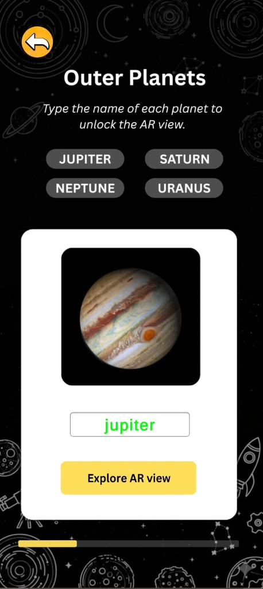
Type-based identification modules to reinforce learning through active recall and verification.
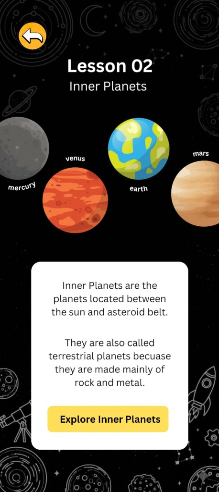
In-depth coverage of the terrestrial planets, their composition, and their place in the Solar System.
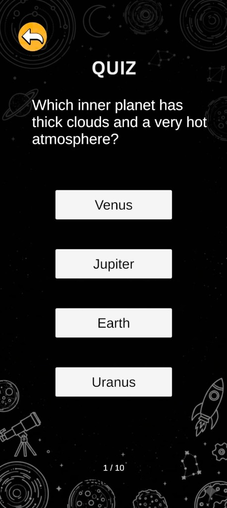
Quick assessment modules to track progress and reinforce key astronomical facts.
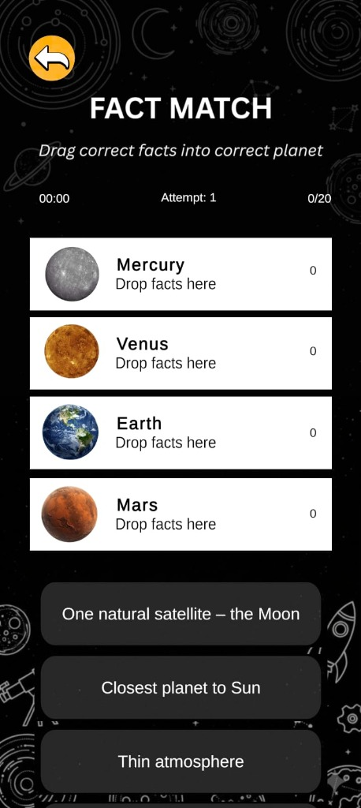
A fast-paced interactive game to link unique planetary facts with their respective celestial bodies.
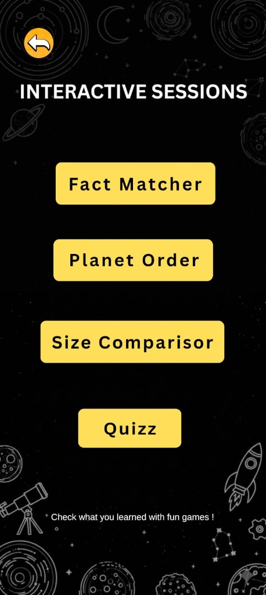
A dedicated menu for interactive sessions, allowing students to learn through play.
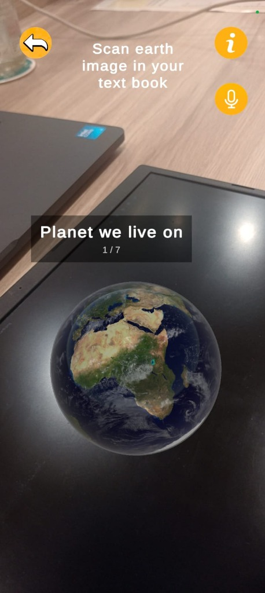
The Core Feature: Scanning 2D textbook images to generate interactive 3D planetary models in real-time.
Visual representations of the technical structure and logical flow of the Shilpa AR system.
High-level overview of the app's components and their interactions.
The sequence of operations that power the Augmented Reality experience.
Detailed flow of the image target recognition and tracking process.
Internal structure and modular organization of the application code.
Explore the application interactively
Investigating AR's impact on STEM education through interactive learning methodologies
Traditional STEM education often relies heavily on textbooks, static diagrams, and teacher-centered instruction methods. While these approaches provide theoretical knowledge, they may limit student engagement and make it difficult for learners to fully understand complex scientific concepts.
Research in educational technology has shown that interactive and visual learning methods can significantly improve student understanding, participation, and knowledge retention. Augmented Reality (AR) has emerged as a powerful educational technology that allows digital content to be integrated into real-world learning environments.
Instead of using QR-code systems, this project implements Vuforia Image Target Method, where printed textbook images and learning materials function as image recognition targets that trigger AR educational content in real time.
Investigate whether AR-assisted learning improves student engagement and motivation compared to traditional methods
Measure improvement in understanding complex STEM topics through interactive 3D visualization
Evaluate increased student participation during lessons through hands-on AR experiences
Assess quiz performance and long-term knowledge retention versus conventional learning
This project particularly targets students who experience difficulties with conventional book-based learning approaches. The AR platform is designed to provide alternative learning pathways that cater to diverse learning styles and needs.
Pre-test and post-test comparisons to measure knowledge gains
Student surveys and interviews about learning experience
Quiz completion rates and time-on-task measurements
AR group vs traditional learning control groups
Design-based development combining software engineering with educational research
Application development and scene management
Image target recognition and AR tracking
Student-friendly interaction design
Animations and educational activities
The application utilized Vuforia Image Target Method, where predefined textbook images and printed learning materials acted as recognition targets. When students scanned these images using the mobile application, corresponding AR content such as 3D visualizations, animations, and interactive lessons were rendered in real time.
Creating comprehensive learning frameworks with AR integration
Developing recognition targets from textbook materials
Building 3D models and interactive educational content
Implementing MCQ systems and gamified assessments
Adding performance monitoring and user interaction tracking
Ensuring smooth operation across mobile devices
The developed application was also used as the primary tool for collecting research data during the evaluation phase. Students participated in structured learning sessions where they interacted with AR lessons and completed quizzes through the mobile application. During these sessions, the system automatically recorded user interaction data and learning performance metrics.
Knowledge assessment before and after AR intervention
Performance analysis and success metrics
Detailed response pattern analysis
Engagement duration and interaction timing
Task success and progression tracking
Gamified learning effectiveness metrics
Multiple choice questions for knowledge assessment
Interactive assessments with game elements
Real-time performance tracking and analytics
Comprehensive testing approach for technical performance and educational effectiveness
The AR learning application was tested to evaluate both its technical performance and educational effectiveness. The system was tested to ensure that all features worked properly and smoothly on mobile devices through comprehensive testing sessions.
Testing Vuforia SDK for precise image target detection and tracking reliability
Ensuring 3D models and animations load correctly without performance issues
Validating responsive touch controls and intuitive navigation
Monitoring memory usage, frame rates, and overall system stability
Testing across different mobile devices and Android versions
Basic functionality verification and bug identification
Memory usage and frame rate improvements
Cross-device compatibility validation
Real-world usage scenarios and feedback collection
Comprehensive quality assurance and deployment readiness
Several testing sessions were carried out to identify and fix technical issues and improve the overall user experience. Each session focused on different aspects of the application to ensure comprehensive coverage and quality assurance.
Visual documentation of student interaction and application testing
High precision image target detection
Smooth 60fps on target devices
Broad Android device support
Quantitative analysis demonstrating effectiveness of AR learning platform
Interactive comparison between traditional learning methods and the AR-based learning platform.
AR learning significantly improved concept understanding compared to traditional teaching methods.
Moving beyond the academic prototype toward real-world application and market deployment
Primary potential users include educational institutions, K-12 schools, private tutoring centers, textbook publishers, and individual students seeking interactive STEM learning resources.
Opportunities exist to integrate this AR technology directly into existing digital curriculums, replacing traditional static textbooks with interactive 3D modules and gamified assessments.
Addressing the rapidly growing global EdTech market, this solution taps into the high demand for immersive learning tools that actively improve concept retention and classroom engagement.
Possibilities for technical expansion include integrating AI-driven personalized learning paths, multiplayer collaborative AR environments, and cloud-based asset streaming for smaller app sizes.
Strategic rollout could begin with B2B partnerships with established textbook publishers, followed by direct-to-consumer app store releases using a freemium or institutional subscription model.
The project ensures high sustainability by allowing continuous updates to AR content over-the-air without needing physical textbook reprints, offering a highly scalable and eco-friendly educational ecosystem.
Access and download all project documentation, research files, and the full application package
Please upload the diagram to see it here.